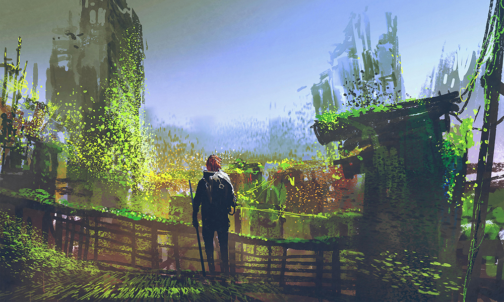

If you've had the pleasure of reading David Farrow's 'Neverglades' series, then you'll know he has an affinity for unreliable and ambiguous places, for injecting horror into the mundane world. Here we experience a dislocated life, slipping through the cracks towards whatever waits beyond — but then, maybe the best case scenario would be that life itself is but a transitional stage…
My first experience of being published was at the hands of Mythaxis' original editor, so it's always a pleasure when I find myself able to do the same for someone else. James Davidson's tale presents an intelligibly alien future society and leaves the exact nature of its protagonist carefully uncertain - but they are certainly a person of some kind, within certain constraints.

Real-world conflict has always provided a rich vein to mine for fiction, though when the conflict is war there can be little doubt that those inspired would prefer not to be. Here, Ukraine-born Elana Gomel bends a striking East-European folktale into a timely parable of terrible loss and sacrifice. Content warning, for horror, familial violence, and sorrow.

The first issue after the Great Mythaxis Facelift featured Daniel Ausema's first appearance here, with a not-exactly road-trip narrative whose heroine travelled a decaying multiverse at the whim of a reality-leaping conveyor belt. Now he returns us to those strange and unfamiliar environs… but with one familiar face at least.
Sometimes a story disguises its message. Sometimes a story lets the startling reveal creep up slowly on you. Or, sometimes, a story just straight up announces 'This one is about turning into a werewolf, social commentary attached.' In this case at least, Rina Song is that kind of storyteller. Sometimes, honesty is the best policy…
Regular Mythaxis readers will be long tired of the editor's observation about stories that seem to come in pairs, but I'm doing it again. Despite their differences, Alexander Zalben's tale feels like a thematic sibling to 'An Odd Recurring Dream' — despite their commonalities, they go in very different ways.
As stated, issues of Mythaxis tend to coalesce in interesting and unpredictable ways. Thorin N. Tatge's tale closes out this issue as the perfect counterpoint to our opener: how better to balance a creeping sense of alienation and the loss of self than with unmitigated exuberance and wholehearted companionship?